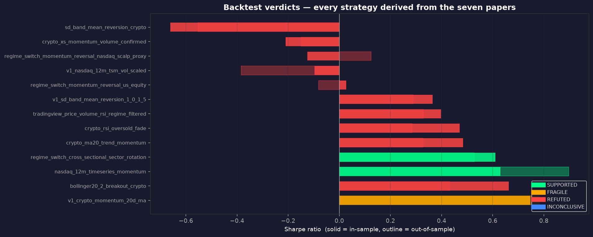
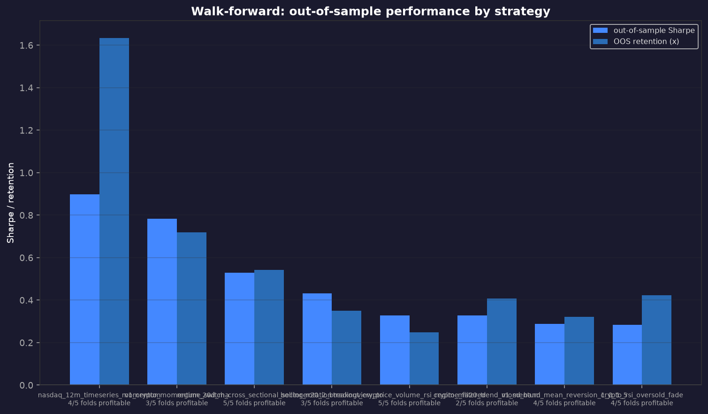
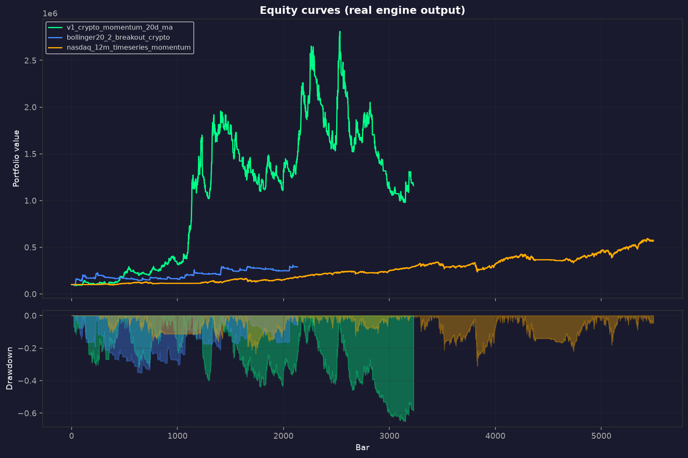
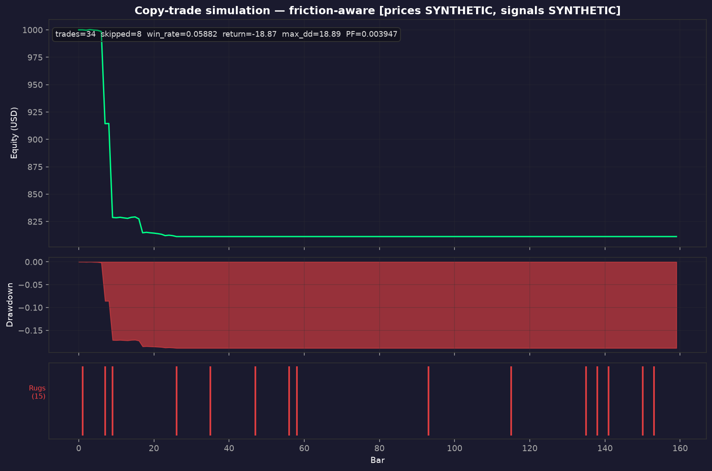
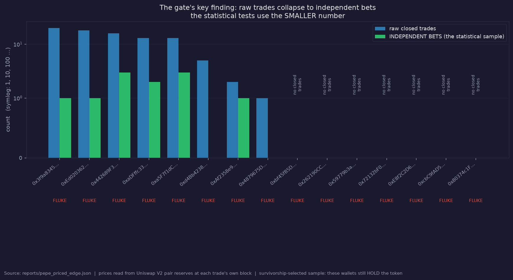
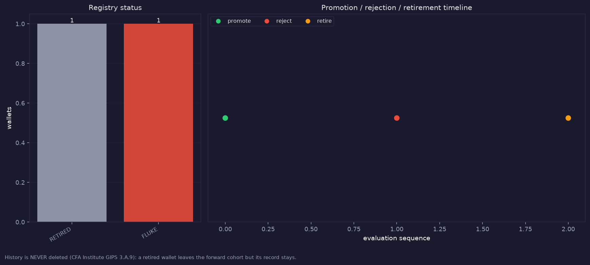
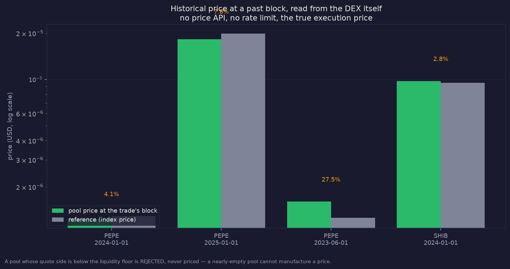
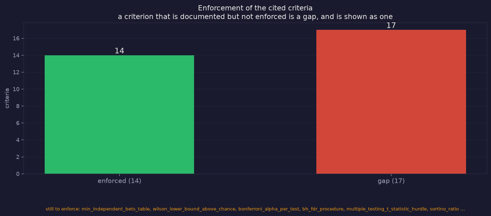
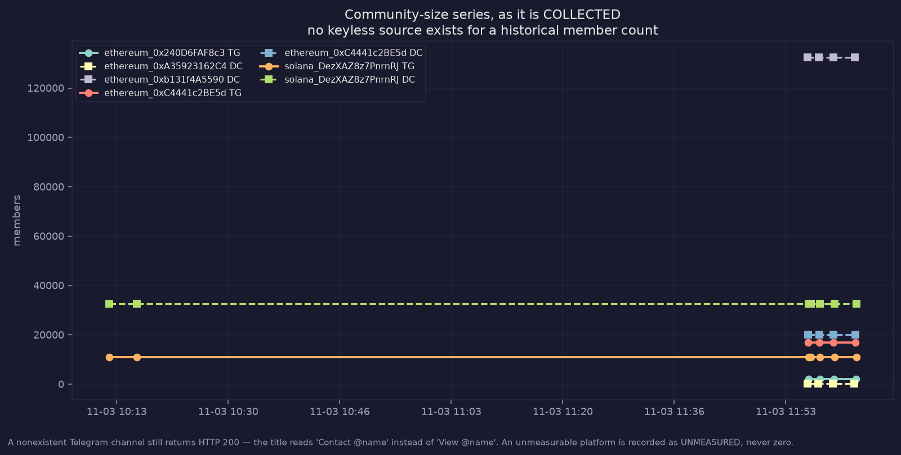

Seven papers · thirteen strategies · three-branch disclosures · on-chain memecoin quant layer
| Strategy | Paper | Verdict | Validation | Trades | Sharpe | CAGR | MaxDD | OOS Sharpe | OOS folds |
|---|---|---|---|---|---|---|---|---|---|
v1_crypto_momentum_20d_ma | Trading strategies for retail traders (LeapSpace v1) | FRAGILE | FULL gauntlet | 1328 | 0.7470487846189819 | 0.21303102174528044 | 0.6518654704542374 | 0.7833531133016806 | 3/5 |
bollinger20_2_breakout_crypto | Trading strategies for retail traders (LeapSpace 2.0) | REFUTED | --quick | 654 | 0.6627055874750487 | 0.13493933749643094 | 0.352341664323615 | 0.43215192520441925 | 3/5 |
nasdaq_12m_timeseries_momentum | Trading strategies for retail traders (LeapSpace 2.0) | SUPPORTED | FULL gauntlet | 71 | 0.6304260057333084 | 0.08287790148934393 | 0.30961632731662236 | 0.8981072391590574 | 4/5 |
regime_switch_cross_sectional_sector_rotation | Financial market regime identification (LeapSpace) | SUPPORTED | FULL gauntlet | 2089 | 0.6106875964301612 | 0.04705789010660477 | 0.1722195550811665 | 0.5278948265425338 | 5/5 |
crypto_ma20_trend_momentum | Trading strategies for retail traders (LeapSpace 2.0) | REFUTED | --quick | 1169 | 0.4837554222448323 | 0.12196916056922591 | 0.76721917076266 | 0.32738717625614244 | 2/5 |
crypto_rsi_oversold_fade | Trading strategies for retail traders (LeapSpace 2.0) | REFUTED | --quick | 636 | 0.4709447661261854 | 0.09542801580414872 | 0.4400341307825034 | 0.28460097960589986 | 4/5 |
tradingview_price_volume_rsi_regime_filtered | Free trading indicators for directional edge (LeapSpace) | REFUTED | --quick | 179 | 0.39806146127794767 | 0.0377582858743466 | 0.3001601562162608 | 0.3280551449464952 | 5/5 |
v1_sd_band_mean_reversion_1_0_1_5 | Trading strategies for retail traders (LeapSpace v1) | REFUTED | --quick | 496 | 0.36462141155565875 | 0.04136047981259994 | 0.3466846495024831 | 0.2887350629814534 | 4/5 |
regime_switch_momentum_reversal_us_equity | Financial market regime identification (LeapSpace) | REFUTED | --quick | 80 | 0.027464016109220866 | -0.01026907516039921 | 0.5535072569124422 | -0.08091495692637768 | 1/5 |
v1_nasdaq_12m_tsm_vol_scaled | Trading strategies for retail traders (LeapSpace v1) | REFUTED | --quick | 166 | -0.09711558964167841 | -0.004025821123975315 | 0.14313139837476707 | -0.38394394435312745 | 0/5 |
regime_switch_momentum_reversal_nasdaq_scalp_proxy | NASDAQ market regime identification (LeapSpace) | REFUTED | --quick | 637 | -0.12443978437732625 | -0.03548920316227999 | 0.6834744695546048 | 0.12471627691257144 | 4/5 |
crypto_xs_momentum_volume_confirmed | Trading strategies for retail traders (LeapSpace 2.0) | REFUTED | --quick | 2018 | -0.2101672964565547 | -0.15531200204558004 | 0.823781026805811 | -0.14905172070327496 | 2/5 |
sd_band_mean_reversion_crypto | Trading strategies for retail traders (LeapSpace 2.0) | REFUTED | --quick | 974 | -0.6606191935948359 | -0.40714295521643984 | 0.9930564263479791 | -0.5527477223080706 | 2/5 |
In-sample vs out-of-sample Sharpe for every paper-derived strategy.

Out-of-sample Sharpe and fold profitability per strategy.

Real engine equity curves for the three highest-Sharpe strategies.

Friction-aware copy-trading simulation: equity, underwater drawdown and injected rug events. Synthetic inputs, labelled as such on the chart.

Raw closed trades vs the INDEPENDENT BETS the statistical tests actually use. The collapse IS the finding.

Registry status and the promotion/retirement timeline. History is never deleted (GIPS 3.A.9).

Historical price read from the DEX's own reserves at each trade's block, against the known reference prices.

Which of the cited criteria are enforced in code. A documented-but-unenforced criterion is shown as a gap.

The community-size series, as it is COLLECTED. There is no keyless source for a historical member count.
